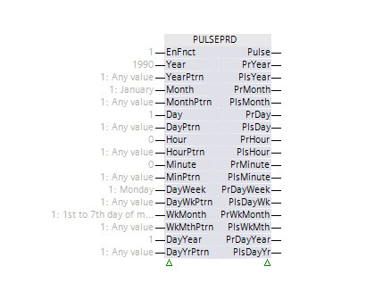
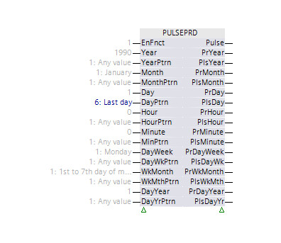
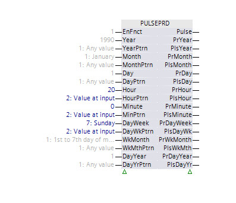
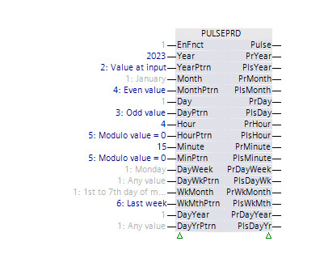
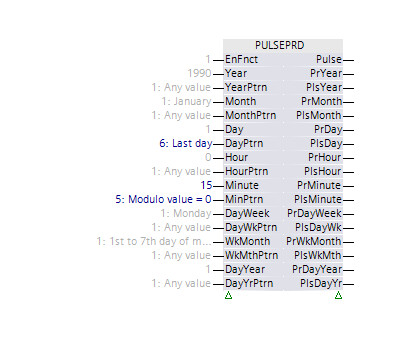

[PULSEPRD] 周期性脉冲
功能块PULSEPRD根据用户配置及时生成脉冲。
PULSEPRD 根据用户配置及时生成脉冲。
Enable and disable the function
如果启用该功能 (EnFnct = 1)，则功能块将获取控制器时间并根据用户配置生成脉冲。如果该功能被禁用，则不会产生脉冲。当前控制器时间仍然在输出处提供。
Configuration
PULSEPRD 可以在特定时刻产生脉冲。该时间在输入 [年]、[月]、[日]、[小时] 和 [分钟] 处配置。 PULSEPRD 接收控制器时间并将其与配置的时间进行比较。当控制器时间与配置时间匹配时，输出 [Pulse] 处会生成脉冲。如果相应的模式输入 [YearPtrn]、[MonthPtrn]、[DayPtrn]、[HourPtrn] 和 [MinPtrn] 具有值“Value at input”，则输入 [Year]、[Month]、[Day]、[Hour] 和 [Minute] 处的值在功能块中被视为特定时间值。
PULSEPRD 可以定期在 [Pulse] 输出处生成脉冲。可以通过将某些模式输入配置为不同于“输入值”的值来实现周期性脉冲。例如，如果 [YearPtrn]、[MonthPtrn] 和 [DayPtrn] 为“任意值”，[HourPtrn] 和 [MinPtrn] 为“输入值”，[Hour] 为“12”，[Minute] 为“0”，则每天 12:00 在 [Pulse] 输出处生成脉冲。
模式输入处的值“模块值 = 0”用于生成周期脉冲，周期由用户配置。例如，[DayPtrn] 的值“Module value = 0”和[Day] 的值“3”每三天触发一次脉冲生成。
可以通过配置输入 [DayWeek]、[WkMonth] 和 [DayYear] 来限制生成的脉冲。例如，[DayWeek] 中的值“Monday”仅当当前日期为“Monday”时才允许生成脉冲。与特定时间的配置输入一样，限制输入也有相应的模式输入：[DayWkPtrn]、[WkMthPtrn] 和 [DayYrPtrn]。这些模式输入的使用方式与特定时间配置的模式类似。
[Pulse] 输出处生成的脉冲考虑功能块的所有配置输入。
如果所有模式输入的值均为“任意值”，则 [Pulse] 输出处不会生成脉冲。
Additional impulses
除了 [Pulse] 输出处的脉冲之外，还在输出 [PlsYear]、[PlsMonth]、[PlsDay]、[PlsHour]、[PlsMinute]、[PlsDayWk]、[PlsWkMth] 和 [PlsDayYr] 处生成脉冲。这些附加脉冲仅考虑相应的配置输入。例如，在 [PlsDay] 处生成的脉冲仅取决于输入 [Day] 和 [DayPtrn] 处的配置。如果 [DayPtrn] 的值为“任意值”，则每次控制器时间中的日期值发生变化时都会生成脉冲。
Controller time
输出 [PrYear]、[PrMonth]、[PrDay]、[PrHour]、[PrMinute]、[PrDayWeek]、[PrWkMonth] 和 [PrDayYear] 以整数值形式提供当前控制器时间。它们在控制程序逻辑中用于为功能块无法覆盖的情况生成脉冲。

由于控制器的时间同步，PULSEPRD 可能不会生成所有所需的脉冲，或者可能会生成两次脉冲。
PULSEPRD 不验证其配置。对于无效配置，[Pulse] 输出处不会生成脉冲。例如，[WkMthPttrn] =“上周”、[DayPtrn] =“输入值”和 [Day] =“1”的组合不会在 [Pulse] 处生成脉冲。
用于配置输入 [WkMonth] 和 [WkMthPtrn] 的月份周数不是星期一至星期日期间。这些输入的周被视为 7 天周期：“该月的前 7 天”、“该月的后 7 天”等。
例子：
1: Day 1 to 7 of month
2: Day 8 to 14 of month
3: Day 15 to 21 of month
4: Day 22 to 28 of month
5: Day 29 to 31 of month
与“输入值”模式结合使用的所有配置输入的值都限制在“引脚”表中指定的范围内。与“模值 = 0”模式结合使用的所有配置输入的最小值为 2。
Examples for the impulse behavior
 | [脉冲] – 不产生脉冲。 |
 | [脉冲] – 每月最后一天开始时的脉冲。 |
 | [脉冲] – 脉冲每周日 20:00。 |
 | [脉冲] – 2023 年，每个偶数月，每个奇数日都会产生脉冲。 |
 | [脉冲] – 每月最后一天每 15 分钟脉冲一次。 |
输入 | 描述 | 数据类型 | 默认值 |
|---|---|---|---|
EnFnct | Enable function 启用该功能。 | 布尔值 | 1 |
0 - 该功能被禁用。 | |||
Year | Year 特定年份或年份的模值 | 整数 | 1990 1990...2089 |
|
YearPtrn | Year pattern | 整数 | 1: Any value |
1: Any value | |||
Month | Month 特定月份或一个月的模值 | 整数 | 1: January |
1: January | |||
|
MonthPtrn | Month pattern | 整数 | 1: Any value |
1: Any value | |||
Day | Day 特定日期或一天的模值 | 整数 | 1 1...31 |
|
DayPtrn | Day pattern | 整数 | 1: Any value |
1: Any value | |||
Hour | Hour 特定小时或一小时的模值 | 整数 | 0 0...23 |
|
HourPtrn | Hour pattern | 整数 | 1: Any value |
1: Any value | |||
Minute | Minute 特定分钟或一分钟的模值 | 整数 | 0 0...59 |
|
MinPtrn | Minute pattern | 整数 | 1: Any value |
1: Any value | |||
DayWeek | Day of week 一周中的特定日期或一周中某一天的模值 | 整数 | 1: Monday |
1: Monday | |||
|
DayWkPtrn | Day of week pattern | 整数 | 1: Any value |
1: Any value | |||
|
WkMonth | Week of month 该月的特定周或该月一周的模值 | 整数 | 1: Day 1 to 7 of month |
1: Day 1 to 7 of month | |||
|
WkMthPtrn | Week of month pattern | 整数 | 1: Any value |
1: Any value | |||
DayYear | Day of year 一年中的特定日期或一年中某一天的模值 | 整数 | 1 1...366 |
|
DayYrPtrn | Day of year pattern | 整数 | 1: Any value |
1: Any value | |||
输出 | 描述 | 数据类型 | 默认值 |
|---|---|---|---|
|
Pulse | Pulse | 布尔值 | 0 |
|
PrYear | Present year | 整数 | 1990 |
|
PlsYear | Pulse, year | 布尔值 | 0 |
|
PrMonth | Present month | 整数 | 1: January |
1: January | |||
|
PlsMonth | Pulse, month | 布尔值 | 0 |
|
PrDay | Present day | 整数 | 1 |
|
PlsDay | Pulse, day | 布尔值 | 0 |
|
PrHour | Present hour | 整数 | 0 |
|
PlsHour | Pulse, hour | 布尔值 | 0 |
|
PrMinute | Present minute | 整数 | 0 |
|
PlsMinute | Pulse, minute | 布尔值 | 0 |
|
PrDayWeek | Present day of week | 整数 | 1: Monday |
1: Monday | |||
|
PlsDayWk | Pulse, day of week | 布尔值 | 0 |
|
PrWkMonth | Present week of month | 整数 | 1: Day 1 to 7 of month |
1: Day 1 to 7 of month | |||
|
PlsWkMth | Pulse, week of month | 布尔值 | 0 |
|
PrDayYear | Present day of year | 整数 | 1 |
|
PlsDayYr | Pulse, day of year | 布尔值 | 0 |